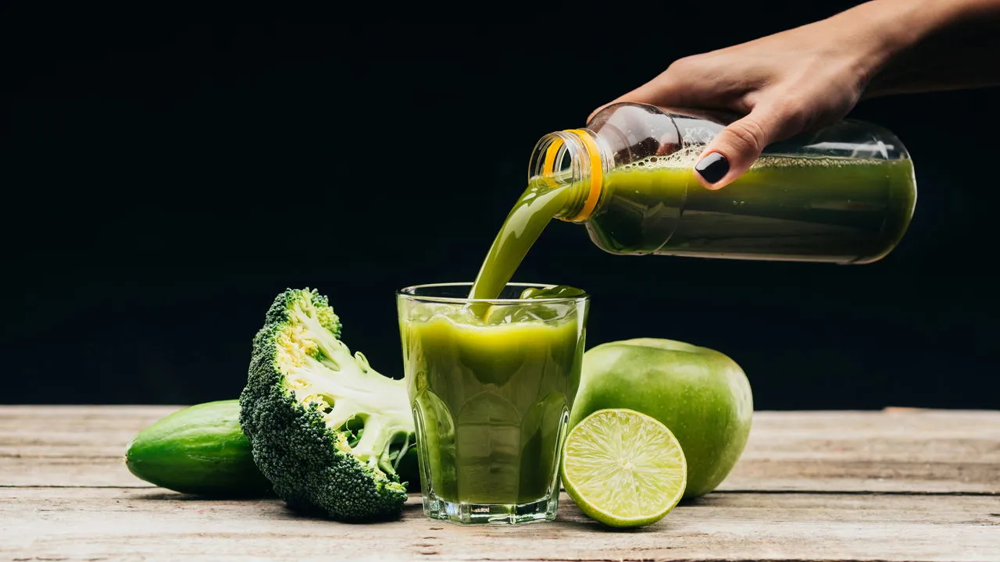
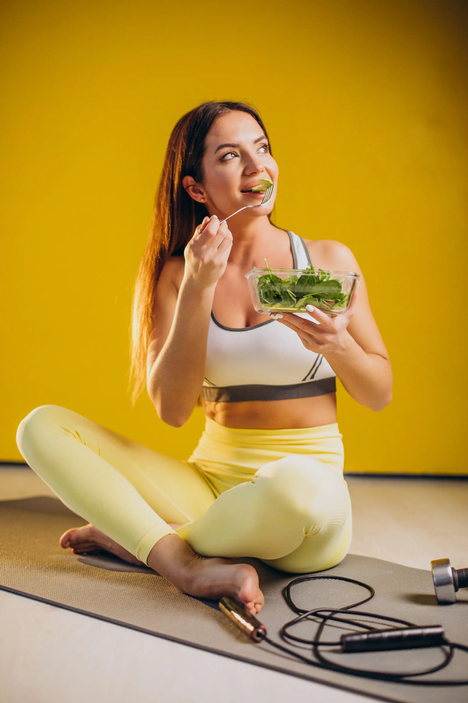
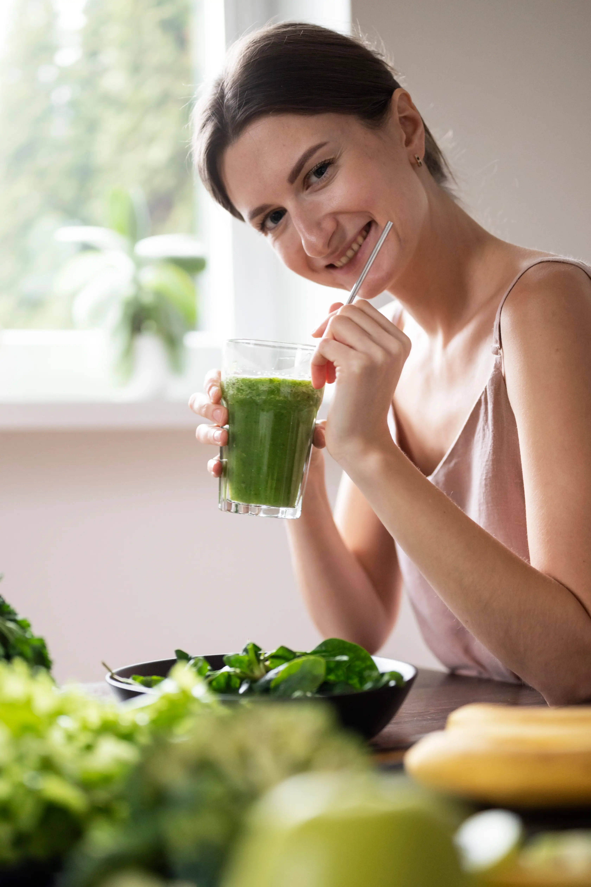

Veja Transformações Reais de Nossas Alunas com Nosso Método Detox Depois do Desafio 7 dias
Marina S., 38 anos - Rio de Janeiro perdeu 4,2kg em 7 dias com nosso método detox!

Catarina L., 29 anos - Recife transformou seu corpo e sua saúde com nosso plano prático!
Marina S., 38 anos - Rio de Janeiro
"Após duas gestações consecutivas, meu corpo parecia irreconhecível. Retenção de líquidos, digestão lenta e uma sensação constante de fadiga haviam se tornado minha nova normalidade. Cética, iniciei o detox de 7 dias mais como um último recurso do que com real esperança. No terceiro dia, a transformação começou: o inchaço diminuiu drasticamente, especialmente nas pernas e rosto. Ao final da semana, havia perdido 4,2kg, mas o mais impressionante foi recuperar minha energia. Consegui voltar a brincar com meus filhos sem aquela exaustão constante. Seis meses depois, mantenho muitos dos hábitos que aprendi e nunca mais voltei ao peso anterior."
Catarina L., 29 anos - Recife
"Problemas de pele persistentes haviam me levado a diversos dermatologistas sem resultado duradouro. Acne, vermelhidão e textura irregular pareciam resistir a todos os tratamentos tópicos. Decidi tentar o detox após ler sobre a conexão intestino-pele. Os primeiros dias foram desafiadores, especialmente abandonar açúcar e laticínios. Entretanto, ao quinto dia notei uma diferença impressionante: a inflamação havia reduzido consideravelmente e novas espinhas pararam de surgir. Além da melhora na pele, perdi 2,6kg e a digestão melhorou drasticamente. Hoje mantenho um 'minidetox' mensal de 3 dias como manutenção, e minha autoestima está em outro nível. O programa me ensinou que beleza verdadeira começa de dentro para fora."
CNN Explica: O Que é a Dieta Detox e Como Ela Pode Transformar Sua Saúde
Dieta Detox: O Segredo das Celebridades Para Eliminar Toxinas e Emagrecer
Com a orientação certa, a dieta detox pode trazer resultados surpreendentes para o corpo e a mente.
Por Gabriela Macedo | CNN
23/02/2024 às 04:00

Conhecida por acelerar a perda de peso e melhorar a saúde, a dieta detox tem ganhado cada vez mais adeptos. Celebridades e influenciadores já utilizam esse método para manter a boa forma e eliminar toxinas. Também chamada de “dieta desintoxicante“, essa abordagem alimentar ajuda o corpo a se livrar de substâncias prejudiciais, como conservantes, agrotóxicos e açúcares refinados.
Mas a pergunta que muitos fazem é: será que ela realmente funciona? Segundo especialistas, a resposta é sim, desde que seja feita com os ingredientes corretos e um plano nutricional adequado.
O que é dieta detox?
De acordo com Patrícia Santiago, médica com pós-graduação em nutrologia, a dieta detox é “um modelo alimentar focado no consumo de alimentos naturais e ricos em nutrientes, enquanto evita substâncias que podem sobrecarregar o organismo”.
Este tipo de alimentação prioriza frutas, vegetais, chás antioxidantes e superalimentos, eliminando ultraprocessados, açúcares adicionados e cafeína em excesso. “Além da eliminação de toxinas, esse método pode melhorar a digestão, aumentar a disposição e acelerar o metabolismo”, destaca.
O Segredo Para um Detox Eficiente
Estudos mostram que o detox eficaz não é apenas sobre restrição alimentar, mas sim sobre oferecer ao corpo os nutrientes certos para potencializar o processo natural de desintoxicação.
Foi com esse princípio que nutricionistas especializados desenvolveram um plano detox completo, que já ajudou milhares de pessoas a eliminarem até 4 kg em poucos dias, melhorando a digestão, combatendo o inchaço e aumentando a energia.
🌿 Descubra o método detox aprovado por especialistas!
Acesse aqui e experimente hoje mesmo! 🔥
Cansado de Dietas que Não Funcionam? Transforme Sua Vida Agora!
Você já tentou de tudo para emagrecer, mas sempre acaba desistindo no meio do caminho? Se sente frustrado com dietas complicadas, alimentos caros ou falta de resultados? Este eBook foi criado para você!
- Eliminar toxinas e dar um "reset" no seu organismo.
- Reduzir inchaço e acelerar o metabolismo.
- Descobrir receitas acessíveis e deliciosas que funcionam no dia a dia.
- Criar uma relação saudável com a comida, sem sofrimentos!
Não é mais uma dieta da moda, é uma solução prática para transformar sua alimentação e conquistar o corpo e a saúde que você merece!
Dúvidas? Não precisa ser chef de cozinha, não exige alimentos difíceis de encontrar e você pode começar hoje mesmo!

MAIS VENDIDO
COMBO DETOX + EXERCÍCIOS EM CASA Ebook
- Metodo emagreça em 7 dias Detox
- Mais de 30 receitas
- Exercícios em casa
- Guia de Alimentos Antiinflamatórios
- Planner de Refeições para 7 Dias
Por: 10x de R$7,02
Ou á vista R$59,90 com 15% OFF
8 SUCOS DETOX Ebook
- 8 Receitas de sucos DETOX FIT
Por: 6x de R$5,52
Ou á vista R$29,90 com 15% OFF
Formas de pagamento
Conheça a opinião da mídia sobre o detox
Os maiores veículos de mídia comprovam a eficácia do Detox
"Especialistas dizem: o detox pode transformar sua saúde e autoestima."
"Nutricionistas garantem: o detox elimina toxinas e melhora o corpo."
"Detox não é só suco verde, especialistas mostram que vai além."
"Estudos indicam: detox acelera o metabolismo e ajuda a emagrecer."
Resultados Típicos e o Que Esperar no desafio detox

Perda de Peso Média 3-5Kg em 7 Dias
A maioria dos participantes relata perda entre 3-5kg durante os 7 dias, sendo aproximadamente 60% gordura e 40% retenção de líquidos.

Redução de Medidas 8cm
A média de redução na circunferência abdominal é de 8cm , principalmente devido à diminuição do inchaço intestinal e retenção de líquidos.

Taxa de Conclusão 90%
93% dos participantes completam os 7 dias integralmente , com nível de satisfação médio de 9,2/10 após o programa.

Melhora da Energia 78%
78% dos participantes relatam aumento significativo nos níveis de energia e clareza mental a partir do quarto dia do programa.

Descubra o poder do detox
O detox é mais do que uma simples dieta - é um processo completo de limpeza interna que ajuda o corpo a eliminar toxinas acumuladas e restaurar seu funcionamento natural. Quando consumimos alimentos processados, açúcares refinados e gorduras saturadas em excesso, nosso organismo fica sobrecarregado, o que prejudica os processos naturais de eliminação de resíduos e interfere no metabolismo.
RECEBA SEU GUIA DETOX!MAIS VENDIDO
COMBO DETOX + EXERCÍCIOS EM CASA Ebook
- Metodo emagreça em 7 dias Detox
- Mais de 30 receitas
- Exercícios em casa
- Guia de Alimentos Antiinflamatórios
- Planner de Refeições para 7 Dias
Por: 10x de R$7,02
Ou á vista R$59,90 com 15% OFF
Formas de pagamento
Dúvidas Frequentes
O ebook oferece uma abordagem completa para emagrecimento, com dicas práticas e orientações baseadas em pesquisa científica.
Você pode adquirir o ebook diretamente no nosso site através do botão de compra disponível na página inicial.
O ebook foi desenvolvido tanto para iniciantes quanto para pessoas com experiência, pois oferece dicas para todas as fases do processo de emagrecimento.
Após a compra, você receberá um link de download diretamente no seu e-mail cadastrado.
Sim! Se você não estiver satisfeito com o ebook, pode solicitar o reembolso dentro de 7 dias após a compra.
Compra 100% Segura
Garantimos sua segurança com criptografia SSL e métodos de pagamento confiáveis.
SSL Seguro
Pagamento Protegido